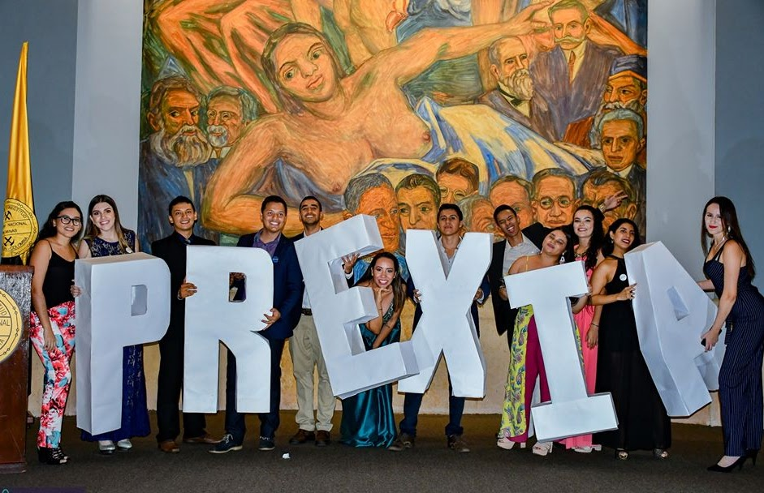
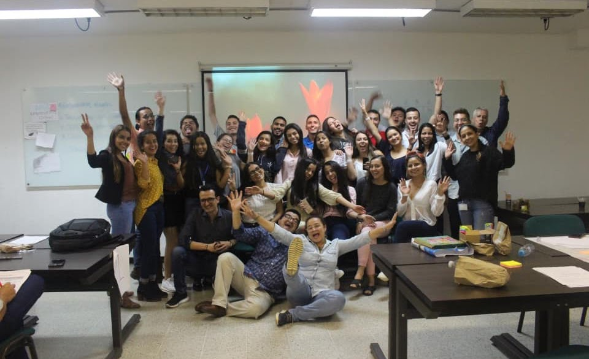

Archivo PREXIA.
¿Qué es? Semillero del Área curricular de Ingeniería Industrial e Ingeniería Administrativa, integrado por estudiantes interesados en una experiencia universitaria que fortalezca sus competencias en comprensión y resolución de problemas de ingeniería, industria y organizaciones empleando metodologías de las ciencias y la ingeniería.
40
Páginas migradas
614
Recursos gráficos
8
Colecciones
6
Ediciones EISI
Colecciones principales.
Secciones estructurales que organizan las cuatro líneas de trabajo y las seis ediciones de los Encuentros Internacionales EISI (2020–2025).


III Encuentro Internacional de Semilleros 2022
Para conocer estas 3 modalidades de participación , sus requisitos y acceder al link de inscripción dale clic aquí:

IV Encuentro Internacional de Semilleros 2023
Para conocer estas 3 modalidades de participación , sus requisitos y acceder al link de inscripción dale clic aquí:

Líneas Prexia
Explora las 4 líneas de acción del semillero: Consultoría a MiPymes, Investigación, Emprendimiento y Comunicaciones.

V Encuentro Internacional de Semilleros 2024
Clic aquí para conocer más sobre cada una de las mesas temáticas
Directorio de 40 páginas.
Filtra por colección o busca por palabra clave entre todas las páginas y subpáginas migradas desde Google Sites.

I Encuentro Internacional de Semilleros 2020
6 & 7 de noviembre - Modalidad Virtual Idioma Oficial: Español - No contamos con servicios de traducción Agenda

II Encuentro Internacional de Semilleros 2021
5 & 6 de noviembre - Modalidadv irtual Idiomao ficial: Español - No contamos con servicios de traducción Agenda
III Encuentro Internacional de Semilleros 2022
Para conocer estas 3 modalidades de participación , sus requisitos y acceder al link de inscripción dale clic aquí: Modalidades de participación Para saber a mas profundidad cada una de las mesas temáticas dale clic aquí
IV Encuentro Internacional de Semilleros 2023
Para conocer estas 3 modalidades de participación , sus requisitos y acceder al link de inscripción dale clic aquí: Modalidades de participación Para saber a mas profundidad cada una de las mesas temáticas dale clic aquí
Líneas Prexia
Estructura organizacional de PREXIA en cuatro líneas estratégicas: Consultoría, Investigación, Emprendimiento y Comunicaciones.
V Encuentro Internacional de Semilleros 2024
Clic aquí para conocer más sobre cada una de las mesas temáticas Ingresa frecuentemente a este sitio web ya que por este medio estarán publicadas todas las actualizaciones del evento, además revisa todos los correos prov

VI EISI 2025
VI Encuentro Internacional de Semilleros de Investigación PREXIA UNAL 2025 Ingeniería que Transforma Territorios: Gestión e Innovación para el Desarrollo Sostenible
Agenda
Agenda Día 1 6 de Noviembre
Agenda 2021
Agenda 2021 Día 1 5 de Noviembre Apertura 8:00 - 8:30 08: 30
Agenda 2022
Sección oficial migrada del archivo histórico de PREXIA UNAL.

Conferencistas
Conferencistas Invitados FERNANDO ANTONIO BELTRAME Presidente de ECCA PLAN,
Conferencistas 2021
Conferencistas Invitados ¡Muy pronto les traeremos toda la información de los conferencistas que nos acompañaran en este segundo Encuentro Internacional de Semilleros de Investigación!
Conferencistas 2022
Sección oficial migrada del archivo histórico de PREXIA UNAL.
Conferencistas y ponentes 2023
Sección oficial migrada del archivo histórico de PREXIA UNAL.
Créditos 2025
EQUIPO PREXIA Docente José Ignacio Maya Director y fundador del semillero Prexia
Memorias
Memorias Encuentro 2019 Primer Encuentro Nacional de Semilleros de Investigación "Perspectivas de Innovación en la Gestión de Organizaciones: Competitividad y Productividad"
Mesas Temáticas
Mesas Temáticas A continuación se presentan las diferentes mesas temáticas y los temas que serán tratados en estas Mesa 1:
Mesas Temáticas 2021
Mesas Temáticas A continuación se presentan las diferentes mesas temáticas y los temas que serán tratados en estas Mesa 1:
Mesas Temáticas 2022
Mesa 1: Transformación digital, industria 4.0 y 5.0 Temas
Mesas Temáticas 2023
Mesa 1: Innovación, Competitividad y Desarrollo Endógeno Temas:
Mesas Temáticas 2024
Mesa 1: Finanzas Sostenibles e Inversión de Impacto Temas:
Participa
¡Bienvenido al Encuentro Internacional de Semilleros de Investigación! A continuación, podrás encontrar información sobre las modalidades de participación, los formatos para la presentación de ponencias, formularios de i
Participa 2021
¡Bienvenido al Segundo Encuentro Internacional de Semilleros de Investigación! A continuación, podrás encontrar información sobre las modalidades de participación, los formatos para la presentación de ponencias, formular
Participa 2022
Ponente Aquellos estudiantes que deseen participar como ponentes deben tener en cuenta los siguientes lineamientos: La participación no tiene ningún costo.
Participa 2023
Ponente Aquellos estudiantes que deseen participar como ponentes deben tener en cuenta los siguientes lineamientos: La participación no tiene ningún costo.

Participa 2024
Ponentes Aquellos estudiantes que deseen participar como ponentes deben tener en cuenta los siguientes lineamientos: La participación no tiene ningún costo.

Participa 2025
PARTICIPA Encuentra las diferentes formas de participación en nuestro VI EISI PREXIA UNAL 2025
Preguntas Frecuentes
PREGUNTAS FRECUENTES ¿El VI EISI 2025 admite ponencias virtuales o en Línea ? No. después de la pandemia hemos descontinuado esa opción. El propósito, además de divulgar los avances de investigación de los estudiantes es
Presentación de Trabajos
Términos de Referencia para Ponentes y Evaluadores Encuentra los requisitos y enlaces para presentartu trab ajo, el cual será sometido a evaluación para ser aceptados en nuestro

Prexia Comunica
Divulgación, Visitas Organizacionales, y Eventos académicos Objetivo Gestionar los procesos y canales de comunicacion de Prexia dirgidos tanto a clientes internos como externos, permitiendo el adecuado flujo de informaci

Prexia Consultoría
Apoyo a la Productividad de MiPymes Objetivo Desarrollar actividades de consultoría por estudiantes dirigidas a pequeñas y medianas con el propósito de contribuir al mejoramiento de su productividad y desarrollo empresar

Prexia Emprende
Gestión del Emprendimiento Objetivo Desarrollar actividades de gestión del emprendimiento, apoyados por docentes, de manera que se potencien los emprendimientos, principalmente de la sede, y el ecosistema de emprendimien

Prexia Investiga
Gestión de la Investigación Objetivo Generar capacidades de inves tigación en los estudiantes de pregrado de Ingeniería Industrial e Ingeniería Administrati va mediante el desarrollo de actividades de formación y divulga
Propuesta Académica
Propuesta Académica El VI Encuentro Internacional de Semilleros de Investigación PREXIA UNAL 2025 (VI EISI PREXIA UNAL- 2025), organizado por el
Líneas Prexia (ES)
Estructura organizacional de PREXIA en cuatro líneas estratégicas: Consultoría, Investigación, Emprendimiento y Comunicaciones.

Evento 2019
28 • 29 de noviembre | Campus Robledo • Universidad Nacional de Colombia Sede Medellín Galeria Objetivo
Galería 2019
Galeria Día 1 Día 2